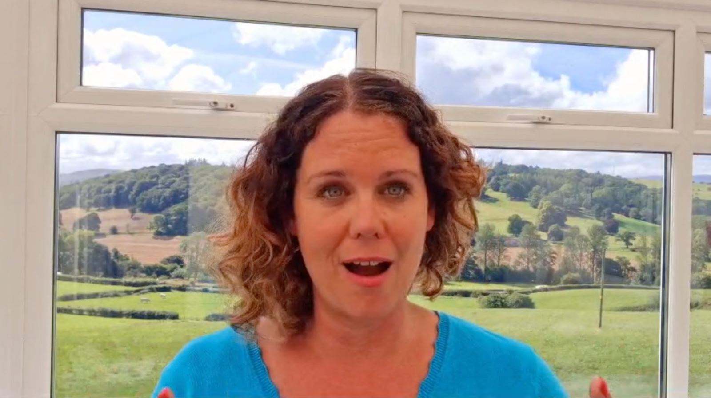
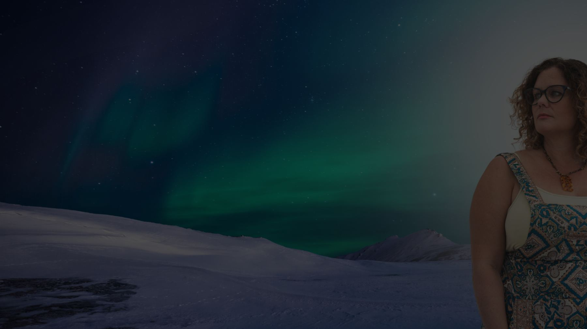
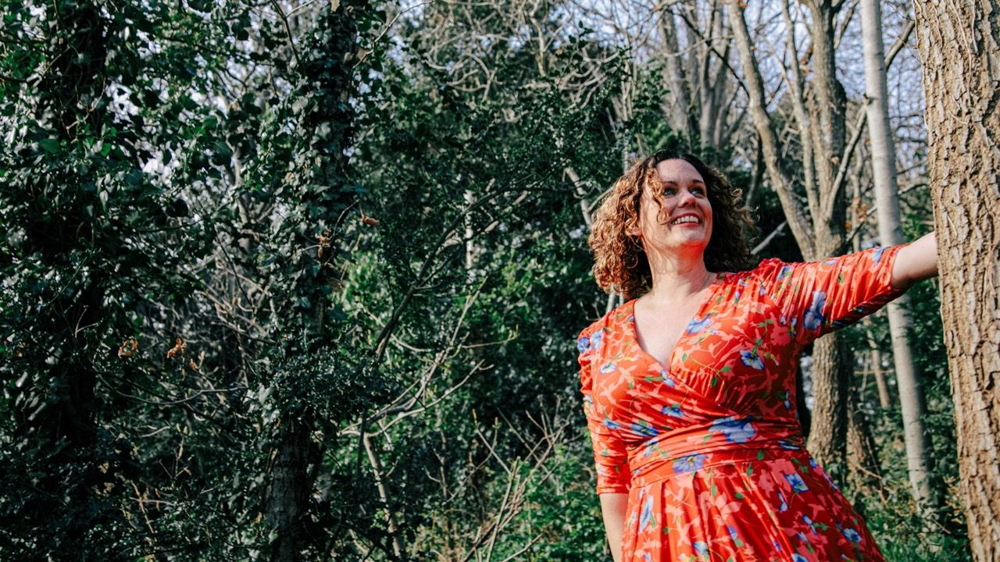

About Beki
Former OT. Now free.
Business and Lifestyle Coach, in the rural forests and mountains of North Wales.

Who is your coach?
I spent years trying, then I figured it out
I am Beki, former Occupational Therapist and now Business and Lifestyle Coach. I left the profession in 2019 to travel the world, build my business and to support a freedom-based life. I have home educated my two kids and live an outdoors lifestyle in the beautiful rural forests and mountains of North Wales, UK.
I spent years trying to create a freedom style business before I hit on a model that worked. I tried network marketing and other businesses, but I was missing the deep fulfilment that I had grown used to having as an OT.
But I figured it out! I started out coaching healthcare workers with stress and burnout, and had fast success: I doubled my OT income from the 2nd month, and hit 5k months in my 4th month of business.
I realised that energy is everything and that running a business does not need to take up all your time.

Most days, outdoors
The business model allowed me to work just 12 hours per week






Qualifications
Trained, and still training
I am a fully qualified UK Occupational Therapist BSc (hons) with an extra degree in IT and Social Sciences BSc (hons) just for fun, although I decided not to renew my.OT registration after I went travelling the world in 2019 as I no longer needed it. I hold a Coaching Accreditation from the Coaching Masters who are registered under the IAPC&M, equivalent to level 4. I am trained in Neuro Transformation Therapy techniques which focuses on the deeper subconscious work in order to create permanent and lasting change. I am extending this training to Master level and this qualification will be coming next!
For the past 4 years I have invested heavily into my growth and personal development. I have worked with a number of 6 and 7 figure business mentors to improve all aspects of what I offer. I keep abreast of the continually changing sales and marketing strategies. I also work with spiritual based coaches to improve aspects of what I offer and I am currently training to become a conscious breathwork facilitator.
It is this investment into my own learning that has enabled me to make fast progress within the business.
One step
Where are you on the climb?
Take the 2-minute quiz, or talk to the team.